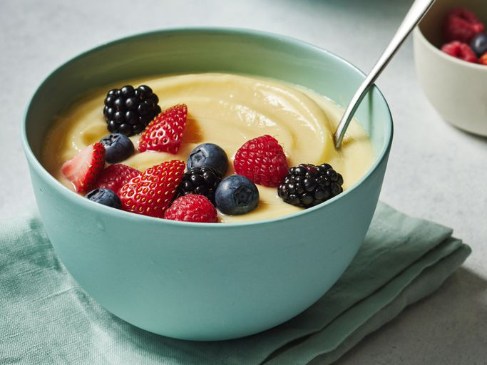

Custard
--> Return to Home

Description
This custard recipe is a combination of a few different recipes. It is not too rich or too sweet as many egg custards can be. This custard can be served warm immediately or cold.
Ingredients
- 4 cups whole milk
- 1 tablespoon vanilla extract
- 1 teaspoon butter
- 4 large eggs
- 1/2 cup white sugar
- 3 tablespoons cornstarch
Steps
- Gather all ingredients
- Place milk, vanilla extract, and butter in a saucepan
- Cook and stir over medium heat until simmering; remove from heat before it comes to a boil
- Whisk eggs, sugar, and cornstarch together in a bowl until sugar dissolves
- Set the saucepan back over low heat. Pour in egg mixture slowly, whisking constantly, until custard thickens enough to coat the bottom of a spoon, 5 to 10 minutes
- Serve warm or transfer custard into a large bowl and cover
- Allow to cool before chilling. Enjoy!
That's it! You've made a yummy custard.
--> Return to Home